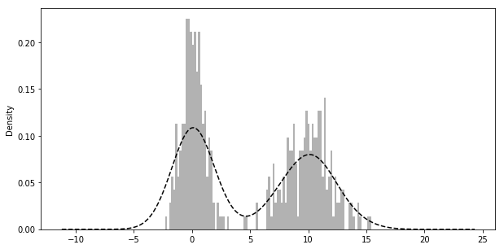

DataAnalysis For Python
Table of Contents
1 numpy
1.1 ndarray
import numpy as np py_array = [1, 2, 3, 4, 5] np_array = np.array(py_array) np_array.shape #=> (5,) np_array.dtype #=> dtype('int64') py_array = [[1, 2, 3, 4], [5, 6, 7, 8]] np_array = np.array(py_array) np_array.shape #=> (2, 4) np_array.ndim #=> 2 np.zeros(10) #=> array([ 0., 0., 0., 0., 0., 0., 0., 0., 0., 0.]) np.ones((2, 3)) #=> array([[ 1., 1., 1.], [ 1., 1., 1.]]) np.empty((2, 3, 2)) #=> # array([[[ 0., 0.], # [ 0., 0.], # [ 0., 0.]], # [[ 0., 0.], # [ 0., 0.], # [ 0., 0.]]]) np.arange(5) #=> array([0, 1, 2, 3, 4]) np.random.randn(2, 3) np_array = np.array([1, 2, 3], dtype=np.int32) np_array = np_array.astype(np.float64) np_array.dtype #=> dtype('float64')
1.1.1 Strides
indicating the number of bytes to "step" in order to advance one element along a dimension, \(3 * 4 * 5\) array of float64(8-bytes) has strides (160, 40, 8)
1.1.2 Supported dtype
- int8, uint8, int16, uint16, int32, uint32, int64, uint64
- float16, float32, float64, float128
- complex64, complex128, complex256
- bool
- object
- string_
- unicode_
1.1.3 Creating
| Function | Description |
|---|---|
| array | Convert input data (list, tuple, array, or other sequence type) to an ndarray |
| asarray | Convert input to ndarray, but do not copy if the input is already an ndarray |
| arange | Like the built-in range but returns an ndarray instead of a list. |
| ones, ones_like | Produce an array of all 1’s with the given shape and dtype. |
| zeros, zeros_like | Produce an array of all 0’s with the given shape and dtype. |
| empty, empty_like | Create new arrays by allocating new memory |
| eye, identity | Create a square N x N identity matrix (1’s on the diagonal and 0’s elsewhere) |
1.1.4 Indexing
basic indexing
arr = np.array(range(12)).reshape(3,4) # array([[ 0, 1, 2, 3], # [ 4, 5, 6, 7], # [ 8, 9, 10, 11]]) arr[1:, :3] # array([[ 4, 5, 6], # [ 8, 9, 10]])
boolean indexing
flags = np.array([1, 2, 3, 2, 2, 1]) data = np.random.randn(6,2) # array([[ 2.11684529, 1.24861544], # [-0.34817586, -0.59905366], # [-0.84976431, 0.11840417], # [ 1.36648373, 1.33416664], # [ 0.37616856, -0.0032112 ], # [-0.7749904 , -0.60457688]]) flags ==2 # array([False, True, False, True, True, False], dtype=bool) data[flags == 2] # array([[-0.34817586, -0.59905366], # [ 1.36648373, 1.33416664], # [ 0.37616856, -0.0032112 ]]) data[(flags == 3) | (flags == 1), 1:] # array([[ 1.24861544], # [ 0.11840417], # [-0.60457688]]) data[data<0] = 0 # array([[ 2.11684529, 1.24861544], # [ 0. , 0. ], # [ 0. , 0.11840417], # [ 1.36648373, 1.33416664], # [ 0.37616856, 0. ], # [ 0. , 0. ]])
fancy indexing
Fancy indexing is a term adopted by NumPy to describe indexing using integer arrays .
Unlike slicing, always copies the data into a new array .
arr # array([[ 0., 0., 0., 0.], # [ 1., 1., 1., 1.], # [ 2., 2., 2., 2.]]) arr[[2, 1]] # array([[ 2., 2., 2., 2.], # [ 1., 1., 1., 1.]]) arr = np.array(range(12)).reshape(3,4) # array([[ 0, 1, 2, 3], # [ 4, 5, 6, 7], # [ 8, 9, 10, 11]]) arr[[1,2], [2,3]] # array([ 6, 11]) # choose location (1, 2) (2, 3) arr[[1,2]][:, [2,3]] # array([[ 6, 7], # [10, 11]]) arr[np.ix_([1,2], [2,3])] # same effect # array([[ 6, 7], # [10, 11]])
1.2 Conditional Logic
1.2.1 any, all
1.2.2 numpy.where
The numpy.where function is a vectorized version of the ternary expression x if condition else y. numpy.where is quicker than list comprehension.
xarr = np.array([1,1,1,1,1]) yarr = np.array([2,2,2,2,2]) cond = np.array([True, False, True, False, False]) np.where(cond, xarr, yarr) # array([1, 2, 1, 2, 2]) np.where(cond, 4, 3) # array([4, 3, 4, 3, 3])
1.3 Transpose
Simple transposing with .T is just a special case of swapaxes
1.4 Useful functions
1.4.1 Math
| Method | Description |
|---|---|
| sign | Returns on array of 1 and -1 depending on the sign of the values |
| sum | Sum of all the elements in the array or along an axis. Zero-length arrays have sum 0 |
| mean | Arithmetic mean. Zero-length arrays have NaN mean |
| std, var | Standard deviation and variance, respectively, with optional degrees of freedom adjustment |
| min, max | Minimum and maximum |
| argmin, argmax | Indices of minimum and maximum elements, respectively |
| cumsum | Cumulative sum of elements starting from 0 |
| cumprod | Cumulative product of elements starting from 1 |
| abs, fabs | Use fabs as a faster alternative for non-complex-valued data |
| modf | Return factional and integral parts of array as separate array |
| rint | Round elements to the nearest integer, preserving the dtype |
| average | Compute the weighted average along the specified axis. |
1.4.2 Linear Algebra
| Function | Description |
|---|---|
| diag | Return the diagonal (or off-diagonal) elements of a square matrix |
| dot | Matrix multiplication |
| trace | Compute the sum of the diagonal elements |
| det | Compute the matrix determinant |
| eig | Compute the eigenvalues and eigenvectors of a square matrix |
| inv | Compute the inverse of a square matrix |
| pinv | Compute the Moore-Penrose pseudo-inverse inverse of a square matrix |
| qr | Compute the QR decomposition |
| svd | Compute the singular value decomposition (SVD) |
| solve | Solve the linear system Ax = b for x, where A is a square matrix |
| lstsq | Compute the least-squares solution to y = Xb |
1.4.3 Random Number Generation
| Function | Description |
|---|---|
| seed | Seed the random number generator |
| permutation | Return a random permutation of a sequence, or return a permuted range |
| shuffle | Randomly permute a sequence in place |
| rand | Draw samples from a uniform distribution |
| randint | Draw random integers from a given low-to-high range |
| randn | Draw samples from a normal distribution with mean 0 and standard deviation 1 (MATLAB-like interface) |
| binomial | Draw samples a binomial distribution |
| normal | Draw samples from a normal (Gaussian) distribution |
| beta | Draw samples from a beta distribution |
| chisquare | Draw samples from a chi-square distribution |
| gamma | Draw samples from a gamma distribution |
| uniform | Draw samples from a uniform [0, 1) distribution |
1.4.4 Set operations
| Function | Description |
|---|---|
| unique(x) | Compute the sorted, unique elements in x |
| intersect1d(x, y) | Compute the sorted, common elements in x and y |
| union1d(x, y) | Compute the sorted union of elements |
| in1d(x, y) | Compute a boolean array indicating whether element of x is in y |
| setdiff1d(x, y) | Set difference, elements in x that are not in y |
| setxor1d(x, y) | Set symmetric differences; elements that are in either of the arrays, but not both |
2 pandas
2.1 Series
Series is a fixed-length ordered dict
2.2 DataFrame
df = pd.DataFrame(np.arange(8).reshape(4,2), columns=['c1', 'c2'], index=['r1', 'r2', 'r3', 'r4']) df.ix['r1'] # retrieve row # c1 0 # c2 1 # Name: r1, dtype: int64 df.ix[['r1','r2']] # c1 c2 # r1 0 1 # r2 2 3 df.T # r1 r2 r3 r4 # c1 0 2 4 6 # c2 1 3 5 7 del df['c2'] df.columns # Index([u'c1'], dtype='object')
2.3 Indexing Options
- Common use:
obj[val], obj.ix[val], obj.ix[:, val], obj.ix[val1, val2], reindex Others:
Type Notes xs Select single row or column as a Series by label icol, irow, iloc, iat Select single column or row, respectively, as a Series by integer location get_value, set_value Select single value by row and column label
2.3.1 difference
- loc: only work on index
- iloc: work on position
- ix: can get data from dataframe without it being in the index
- at: get scalar values. It's a very fast loc
- iat: get scalar values. It's a very fast iloc
2.4 Index
Index objects are immutable, functions as a fixed-size set.
- main type:
Index, Int64Index, MultiIndex, DatetimeIndex, PeriodIndex
| Method | Description |
|---|---|
| append | Concatenate with additional Index objects, producing a new Index |
| diff | Compute set difference as an Index |
| intersection | Compute set intersection |
| union | Compute set union |
| isin | Compute boolean array indicating whether each value is contained in the passed collection |
| delete | Compute new Index with element at index i deleted |
| drop | Compute new index by deleting passed values |
| insert | Compute new Index by inserting element at index i |
| is_monotonic | Returns True if each element is greater than or equal to the previous element |
| is_unique | Returns True if the Index has no duplicate values |
| unique | Compute the array of unique values in the Index |
2.4.1 pd.PeriodIndex
2.5 Functionality
2.5.1 Reindexing
Example:
frame.reindex(columns=['c1', 'c2']) frame.reindex(index=['a', 'b', 'c', 'd'], method='ffill', columns=['c1', 'c2']) frame.reindex(frame2.index, method='ffill') # is similar to frame.ix[['a', 'b', 'c', 'd'], ['c1', 'c2']]
reindex args: index, method, fill_value, limit, level, copy
2.5.2 Drop
frame.drop(['r1', 'r2']) frame.drop(['c1', 'c2'], axis=1)
2.5.3 Selection
See 1.1.4.
2.5.4 Arithmetic
- Basic df1 + df2,
- use add method to fill na values: df1.add(df2, fill_value=0)
- Operation between Dataframe and Series
df = pd.DataFrame(np.arange(6).reshape(3,2), columns=['c1', 'c2'], index=['r1', 'r2', 'r3']) # c1 c2 # r1 0 1 # r2 2 3 # r3 4 5 s = pd.Series([4,5], index=['c1', 'c2']) # c1 4 # c2 5 # dtype: int64 df + s # c1 c2 # r1 4 6 # r2 6 8 # r3 8 10 s2 = pd.Series([1,2,3], index=['r1', 'r2', 'r3']) # r1 1 # r2 2 # r3 3 # dtype: int64 df.add(s2, axis=0) # c1 c2 # r1 1 2 # r2 4 5 # r3 7 8
2.5.5 Broadcasting
frame=pd.DataFrame(np.arange(12).reshape((4,3)), columns=list('bde'), index=list('1234')) series = frame.ix[0] frame - series #=> # b d e # 1 0 0 0 # 2 3 3 3 # 3 6 6 6 # 4 9 9 9 series2 = pd.Series(range(3), index=list('bef')) frame + series2 #=> # b d e f # 1 0.0 NaN 3.0 NaN # 2 3.0 NaN 6.0 NaN # 3 6.0 NaN 9.0 NaN # 4 9.0 NaN 12.0 NaN
2.5.6 Apply
f = lambda x: x.max() frame.apply(f) frame.apply(f, axis=1)
apply can also return a series
def f(x): return pd.Series([x.min(), x.max()], index=['min', 'max']) frame.apply(f) #=> a b # min xxx xxx # max xxx xxx
2.5.7 Sort
df.sort_index() # by column(s) df.sort_index(by='c1') df.sort_index(by=['c1', 'c2'])
2.5.8 Rank
args: 'average'(default), 'min', 'max', 'first'
obj = pd.Series([7, -5, 7, 4, 2, 0, 4, 7]) obj.rank() #=> # 0 7.0 # 1 1.0 # 2 7.0 # 3 4.5 # 4 3.0 # 5 2.0 # 6 4.5 # 7 7.0 obj.rank(method='first') #=> # 0 6.0 # 1 1.0 # 2 7.0 # 3 4.0 # 4 3.0 # 5 2.0 # 6 5.0 # 7 8.0
2.5.9 Other funtions
- numpy ufancs works fine with pandas objects
- applymap(element-wise), map(series element-wise)
- order(for series sorting): s.order()
- isnull, notnull, dropna, fillna
- stack, unstack, swaplevel, sortlevel
- set_index, reset_index
- unique(series based), value_counts(series based), isin(element-wise)
- all, any
- replace
- cut, qcut
2.6 Statistic methods
Basic: count, describe, min, max, quantile, sum, pct_change, diff, corr, cov, corrwith
2.6.1 mean, median, mad, var, std
2.6.2 argmin, argmax, idxmin, idxmax
argmin/argmax: compute index locations (integers) at which minimum or maximum value obtained, respectively
2.6.3 cumsum, cummin, cummax, cumprod
2.6.4 skew
Sample skewness (3rd moment) of values
2.6.5 kurt
Sample kurtosis (4th moment) of values
2.6.6 diff
Compute 1st arithmetic difference (useful for time series)
2.6.7 corr, cov, corrwith
import pandas_datareader as pdr all_data = {} for ticker in ['AAPL', 'IBM', 'MSFT', 'GOOG']: all_data[ticker] = pdr.get_data_yahoo(ticker, '1/1/2000', '1/1/2010') price = pd.DataFrame({tic: data['Adj Close'] for tic, data in all_data.iteritems()}) returns = price.pct_change() returns.MSFT.corr(returns.IBM) returns.MSFT.cov(returns.IBM) returns.corr() returns.corrwith(returns.IBM)
2.6.8 common args
| Method | Description |
|---|---|
| axis | Axis to reduce over. 0 for DataFrame’s rows and 1 for columns |
| skipna | Exclude missing values, True by default |
| level | Reduce grouped by level if the axis is hierarchically-indexed (MultiIndex) |
skipna option:
- True(default): NA values are excluded unless the entire slice (row or column in this case) is NA
- False: if any value is NA, then return NA
2.7 Hierarchical Indexing
2.7.1 Indexing
data[index_level1] data[index_level1 : index_level1] data[[index_level1, index_level1]] select by inner level: data[:, index_level2]
2.7.2 stack, unstack
2.7.3 swaplevel, sortlevel
2.8 Panel
Panel can be thought as a 3-dimensional analogue of DataFrame. Although hierarchical indexing makes using truly N-dimensional arrays unnecessary in a lot of cases
pdata = pd.Panel({stk: pdr.get_data_yahoo(stk, '1/1/2009', '6/1/2012') for stk in ['AAPL', 'GOOG']})
2.8.1 Useful functions
ix
pdata.ix[:, '6/1/2012', :]
swapaxes
pdata.swapaxes('items', 'minor')['Adj Close']
to_frame
index will be the [major, minor] axis, items will be the columns
stacked = pdata.to_frame()
to_panel
stacked.to_panel()
2.9 TimeSeries
2.9.1 numpy.datatime64
nanoseconds resolution. pandas stores timestamps as numpy.datatime64
2.9.2 pandas Timestamp
timezone-aware
to_period
2.9.3 Indexing
ts[(time(10,0))] # same as ts.at_time(time(10,0)) ts.between_time(time(10, 0), time(10, 30)) ts.asof(pd.date_range('2016-05-01 10:00', periods=4, freq='B'))
asof
By passing an array of timestamps to the asof method, you will obtain an array of the last valid(non-NA) values at or before each timestamps.
2.9.4 Frequencies
| Alias | Offset Type |
|---|---|
| D | Day |
| B | BusinessDay |
| H | Hour |
| T or min | Minute |
| S | Second |
| L or ms | Milli |
| U | Micro |
| M | MonthEnd |
| BM | BusinessMonthEnd |
| MS | MonthBegin |
| BMS | BusinessMonthBegin |
| W-Mon, W-TUE, … | Week |
| WOM-1MON, … | WeekOfMonth |
| Q-JAN, Q-FEB, … | QuarterEnd |
| BQ-JAN, BQ-FEB, … | BusinessQuarterEnd |
| QS-JAN, … | QuarterBegin |
| BQS-JAN, … | BusinessQuarterBegin |
| A-JAN, … | YearEnd |
| BA-JAN, … | BusinessYearEnd |
| AS-JAN, … | YearBegin |
| BAS-JAN, … | BusinessYearBegin |
Users can define custon frequency classes
offsets can also be used with datetime or Timestamp objects
offset.rollforward/rollback
ts.groupby(offset.rollforward).mean()
but resample is faster
2.9.5 Timezone
internal library: pytz
tz_localize
tz_convert
2.9.6 Period
pandas.Period
pandas.PeriodIndex
2.9.7 Resample
Aggregating higher frequency data to lower frequency is called downsampling, while converting lower frequency to higher frequency is called upsampling.
args
| Argument | Description |
|---|---|
| freq | String or DateOffset indicating desired resampled frequency, e.g. ‘M', ’5min', or Second(15) |
| how='mean' | Function name or array function producing aggregated value, for example 'ohlc' , np.max. Default 'mean' |
| axis=0 | Axis to resample on, default axis=0 |
| fill_method=None | How to interpolate when upsampling, as in 'ffill' or 'bfill' . By default does no interpolation. |
| closed='right' | In downsampling, which end of each interval is closed (inclusive). Default 'right' |
| label='right' | In downsampling, how to label the aggregated result, with the 'right' or 'left bin edge |
| loffset=None | Time adjustment to the bin labels, such as '-1s' / Second(-1) to shift the aggregate labels one second earlier |
| limit=None | When forward or backward filling, the maximum number of periods to fill |
| kind=None | Aggregate to periods or timestamps |
| convention=None | When resampling periods, the convention ( 'start' or 'end' ) for converting the low frequency period to high frequency. |
2.9.8 useful functions
truncate
slices a timeseries between two dates
normalize
convert times to midnight
compute returns
returns = price.pct_change() ret_index = (1 + returns).cumprod() ret_index[0] = 1
2.9.9 moving window
| Function | Description |
|---|---|
| rolling_count | Returns number of non-NA observations in each trailing window. |
| rolling_sum | Moving window sum. |
| rolling_mean | Moving window mean. |
| rolling_median | Moving window median. |
| rolling_var, rolling_std | Moving window variance and standard deviation, respectively. Uses n - 1 denominator. |
| rolling_skew, rolling_kurt | Moving window skewness (3rd moment) and kurtosis (4th moment), respectively. |
| rolling_min, rolling_max | Moving window minimum and maximum. |
| rolling_quantile | Moving window score at percentile/sample quantile. |
| rolling_corr, rolling_cov | Moving window correlation and covariance. |
| rolling_apply | Apply generic array function over a moving window. |
| ewma | Exponentially-weighted moving average. |
| ewmvar, ewmstd | Exponentially-weighted moving variance and standard deviation. |
| ewmcorr, ewmcov | Exponentially-weighted moving correlation and covariance. |
exponentially-weighted
Exponentially-weighted statistic places more weight on more recent observations It "adapts" faster to changes compared with the equal-weighted version.
expanding window mean
It is just a special case where the window is the length of the time series.
3 wrangling
3.1 Data Input/Output
3.1.1 Reading option categories
Indexing
Can treat one or more columns as the returned DataFrame, and whether to get column names from the file, the user, or not at all.
Type inference and data conversion
This includes the user-defined value conversions and custom list of missing value markers.
Datetime parsing
Includes combining capability, including combining date and time information spread over multiple columns into a single column in the result.
Iterating
Support for iterating over chunks of very large files.
Unclean data issues
Skipping rows or a footer, comments, or other minor things like numeric data with thousands separated by commas.
3.1.2 Hints
- from_csv: a convenience method simpler than read_csv
- pickle related: load, save
3.2 Concatenation
- pd.merge, merge method
- join method: performs a left join on the join keys
- pd.concat
- combine_first: patching missing data with arg object(df.update(overwrite=False))
- align: align two object on their axes with the specified join method for each axis Index
3.2.1 concat args
| Argument | Description |
|---|---|
| objs | List or dict of pandas objects to be concatenated. The only required argument |
| axis | Axis to concatenate along; defaults to 0 |
| join | One of 'inner', 'outer' , defaulting to 'outer' |
| join_axes | Specific indexes to use for the other n-1 axes instead of performing union/intersection logic |
| keys | Values to associate with objects being concatenated, forming a hierarchical index along the concatenation axis |
| levels | Specific indexes to use as hierarchical index level or levels if keys passed |
| names | Names for created hierarchical levels if keys and / or levels passed |
| verify_integrity | Check new axis in concatenated object for duplicates and raise exception if so. By default( False ) allows duplicates |
| ignore_index | Do not preserve indexes along concatenation axis , instead producing a new range(total_length) index |
3.3 Reshaping and Pivoting
3.3.1 stack
Pivots from the columns in the data to the rows. Stacking filters out missing data by default.
data = DataFrame(np.arange(6).reshape((2, 3)), columns=['a', 'b', 'c']) data #=> # a b c # 0 0 1 2 # 1 3 4 5 data.stack() #=> # 0 a 0 # b 1 # c 2 # 1 a 3 # b 4 # c 5 # dtype: int64
3.3.2 unstack
Pivots from the rows into the columns
data.stack().unstack() #=> # a b c # 0 0 1 2 # 1 3 4 5 # can specific level number or name data.stack().unstack(0) #=> # 0 1 # a 0 3 # b 1 4 # c 2 5
3.3.3 pivot
pivot is a shortcut for creating a hierarchical index using set_index and reshaping with unstack
quotes.head() #=> # Open High Low Close Volume \ # Date # 2010-01-04 626.951088 629.511067 624.241073 626.751061 3927000 # 2010-01-05 627.181073 627.841071 621.541045 623.991055 6031900 # 2010-01-06 625.861078 625.861078 606.361042 608.261023 7987100 # 2010-01-07 609.401025 610.001045 592.651008 594.101005 12876600 # 2010-01-08 592.000997 603.251034 589.110988 602.021036 9483900 # Adj Close symbol # Date # 2010-01-04 313.062468 GOOG # 2010-01-05 311.683844 GOOG # 2010-01-06 303.826685 GOOG # 2010-01-07 296.753749 GOOG # 2010-01-08 300.709808 GOOG quotes.pivot(columns='symbol', values='Close') #=> # symbol AAPL GOOG IBM MSFT # Date # 2010-01-04 214.009998 626.751061 132.449997 30.950001 # 2010-01-05 214.379993 623.991055 130.850006 30.959999 # 2010-01-06 210.969995 608.261023 130.000000 30.770000 # 2010-01-07 210.580000 594.101005 129.550003 30.450001 # 2010-01-08 211.980005 602.021036 130.850006 30.660000
3.4 Permutation(randomly reordering)
df = DataFrame(np.arange(5 * 4).reshape(5, 4)) df #=> # 0 1 2 3 # 0 0 1 2 3 # 1 4 5 6 7 # 2 8 9 10 11 # 3 12 13 14 15 # 4 16 17 18 19 sampler = np.random.permutation(5) sampler #=> array([1,0,2,3,4]) df.take(sampler) #=> # 0 1 2 3 # 1 4 5 6 7 # 3 12 13 14 15 # 4 16 17 18 19 # 0 0 1 2 3 # 2 8 9 10 11
3.5 String Manipulation
df.str.XXX
3.5.1 Vectorized string methods
cat, contains, count, endswith/startswith, findall, get, join, len, lower, upper, match, pad, center, repeat, replace, slice, split, strip/rstrip/lstrip
3.6 Check Duplicates
pandas.Index.is_unique, pandas.Series.is_unique
3.7 Others
3.7.1 TODO Indicator/Dummy(for statistical model)
pd.get_dummies
4 plotting
4.1 Basic
4.1.1 Figures and Subplots
fig = plt.figure() ax1 = fig.add_subplot(2, 2, 1) # get a reference of active figure plt.gcf() # all in one subplots fig, axes = plt.subplots(2,3, figsize=(14, 8))
4.1.2 subplots options
| Argument | Description |
|---|---|
| figsize | Size of figure |
| nrows | Number of rows of subplots |
| ncols | Number of columns of subplots |
| sharex | All subplots use the same X-axis ticks |
| sharey | see above |
| subpot_kw | creating dict of keywords |
| **fig_kw | Additional keywords |
4.1.3 Adjusting Size
subplots_adjust
- args: left, right, bottom, top, wspace, hspace
4.1.4 global configuration
plt.rc
plt.rc('figure', figsize=(10, 10)) font_options = {'family' : 'monospace', 'weight' : 'bold', 'size' : 'small'} plt.rc('font', **font_options)
4.2 plot function
4.2.1 plotting range
plt.xlim, plt.ylim, ax.set_xlim, ax.set_ylim
4.2.2 title, label, tick, ticklabel
set_title, set_xlabel, set_xticks, set_xticklabels
4.2.3 legend
fig = plt.figure() ax = fig.add_subplot(1, 1, 1) ax.plot(randn(1000).cumsum(), 'k', label='one') ax.legend(loc='best') #show the label
4.2.4 Annotations
text, arrows, annotate functions
ax.annotate(label, xy=(date, spx.asof(date) + 50), xytext=(date, spx.asof(date) + 200), arrowprops=dict(facecolor='black'), horizontalalignment='left', verticalalignment='top')
shapes
matplotlib.patches
fig = plt.figure() ax = fig.add_subplot(1, 1, 1) rect = plt.Rectangle((0.2, 0.75), 0.4, 0.15, color='k', alpha=0.3) circ = plt.Circle((0.7, 0.2), 0.15, color='b', alpha=0.3) ax.add_patch(rect) ax.add_patch(circ)
4.3 pandas Plotting
4.3.1 Line Plots
Series
| Argument | Description |
|---|---|
| label | Label for plot legend |
| ax | matplotlib subplot object to plot on. If nothing passed, uses active matplotlib subplot |
| style | Style string, like 'ko–' , to be passed to matplotlib |
| alpha | The plot fill opacity (from 0 to 1) |
DataFrame
| Argument | Description |
|---|---|
| kind | Can be 'line', 'bar', 'barh', 'kde' |
| logy | Use logarithmic scaling on the Y axis |
| use_index | Use the object index for tick labels |
| rot | Rotation of tick labels (0 through 360) |
| xticks | Values to use for X axis ticks |
| yticks | Values to use for Y axis ticks |
| xlim | X axis limits (e.g. [0, 10] ) |
| ylim | Y axis limits |
| grid | Display axis grid (on by default) |
| subplots | Plot each DataFrame column in a separate subplot |
| sharex, sharey | If subplots=True , share the same Y/x axis |
| figsize | Size of figure to create as tuple |
| title | Plot title as string |
| legend | Add a subplot legend ( True by default) |
| sort_columns | Plot columns in alphabetical order |
4.3.2 Bar Plots
- kind='bar': for vertical bars, 'barh' for horizontal bars
- stacked=True: stacked bar plots
- useful recipe: s.value_counts().plot(kind='bar')
4.3.3 Histogram & Density Plots
- A kind of bar plot that gives a discretized display of value frequency
comp1 = np.random.normal(0, 1, size=200) # N(0, 1) comp2 = np.random.normal(10, 2, size=200) # N(10, 4) values = Series(np.concatenate([comp1, comp2])) fig = plt.figure(figsize=(10, 5)) values.hist(bins=100, alpha=0.3, color='k', normed=True) values.plot(kind='kde', style='k--')

4.3.4 Scatter Plots
pairs plot or scatter plot matrix: scatter_matrix
4.4 Saving Plots to File
Figure.savefig args
- fname, dpi, facecolor, edgecolor, format
- bbox_inches: The portion of the figure to save
4.5 interactive mode
4.6 add-ons
- mplot3d
- basemap /cartopy: projection and mapping(plotting 2D data on maps)
- seaborn /holoviews/ggplot: higher-level plotting interfaces
- axes_grid: axes and axis helpers
5 aggregation
5.1 group by
# series groupby df['data1'].groupby(df['key1']) df.groupby(df['key1'])['data1'] # syntactic sugar dict(list(df.groupby('key1'))) # df groupby df.groupby(['key1', 'key2']) # options: as_index, axis # get group size df.groupby().size() # iterations for name, group in df.groupby('key1'): print name, group
5.1.1 via dict
# using mapping dict mapping = {'a': 'group1', 'b': 'group1', 'c': 'group2'} df.groupby(mapping, axis=1)
5.1.2 via function
Any function passed as a group key will be called once per index value, with the return values being used as the group names
# using function df.groupby(len).sum()
5.1.3 via mixing
Mixing functions with arrays, dicts or Series is not a problem as everything gets converted to arrays internally
key_list = ['one', 'one', 'two'] df.groupby([len, key_list]).min()
5.2 groupby aggregation
| Name | Description |
|---|---|
| count | Number of non-NA values in the groupNumber of non |
| sum | Sum of non-NA values |
| mean | Mean of non-NA values |
| median | Arithmetic median of non-NA values |
| std, var | Unbiased (n - 1 denominator) standard deviation and variance |
| min, max | Minimum and maximum of non-NA values |
| prod | Product of non-NA values |
| first, last | First and last non-NA values |
5.2.1 aggregate / agg method
Series
s.agg(['mean', 'std']) s.agg([('foo', 'mean'), ('bar', 'np.std')]) # foo bar will be the column name of result df
DataFrame
df.agg({'col1': 'mean', 'col2': 'std', 'col3': np.max}) df.agg({'col1': ['mean', 'std']})
5.2.2 apply
apply function has args:
df.groupby(['key1', 'key2']).apply(top, n=1)
GroupBy method
grouped.describe() # is just shortcut of f = lambda x: x.describe() grouped.apply(f)
5.2.3 transform
transform is a more specialized function having rigid requirements. transform applies a funtion to each group, then places the results in the appropriate locations. If each group produces a scalar value, it will be propagated(broadcasted).
Standardizing data (zscore) within group
key = lambda x: x.year zscore = lambda x: (x - x.mean()) / x.std() transformed = ts.groupby(key).transform(zscore)
Filling NAs within groups with a value derived from each group
f = lambda x: x.fillna(x.mean()) transformed = grouped.transform(f)
5.3 cut & qcut
5.4 fillna with group value
grouped.apply(lambda g: g.fillna(g.mean())) fill_values = {'a': 5, 'b': 4} grouped.fillna(lambda g: g.fillna(fill_values[g.name]))
5.5 pivot_table
pivot_table aggregates a table of data by one or more keys, arranging the data in a rectangle with some of the group keys along the rows and some along the columns. default aggfunc: mean
5.5.1 crosstab
A cross-tabulation (or crosstab for short) is a special case of a pivot table that computes group frequencies.
6 other tools
6.1 dateutil
parser.parse: parse datetime str to datetime object
6.2 statsmodels
6.3 scikit-learn
6.4 bottleneck
provides an alternate implementation of NaN-friendly moving window functions.
6.5 visualization ecosystem
- Chaco: 2-Dimensional Plotting, interactive visualization.
- mayavi: a 3D graphics toolkit built on the open source C++ graphics library VTK
- PyQwt